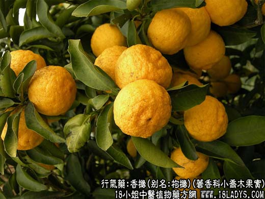
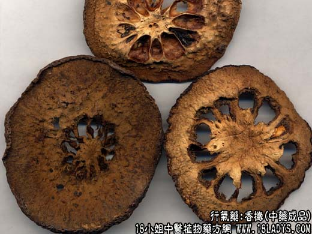

【中药概述】
香橼，别名：枸橼、西柠檬、西柠、香泡树，为芸香科小乔木植物枸椽或香圆的成熟果实。辛、微苦、酸，温。归肝、脾、肺经。
1．平肝舒郁，健脾开胃：用于肝郁不舒及脾胃气滞的胸腹痞满，胁肋胀痛、恶心呕吐、食欲不振等，常与香附，木香，白豆蔻等同用。
2．化痰止咳：用于痰多咳嗽，有顺气化痰之效，常与半夏，茯苓，生姜等同用。
【药物形态】
本品呈圆形或长圆形片，直径4～10cm，厚o.2～o.5cm。横切片外果皮黄色或黄绿色，边缘呈波状，散有凹人的油点；中果皮厚1～3cm，黄白色，有不规则的网状突起的维管束；瓤囊10～17室。纵切片中心柱较粗壮。质柔韧。气清香，味微甜而苦辛。香圆 本品呈类球形，半球形或圆片，直径4～7cm。表面黑绿色或黄棕色，密被凹陷的小油点及网状隆起的粗皱纹，顶端有花柱残痕及隆起的环圈，基部有果梗残基。质坚硬。剖面或横切薄片，边缘油点明显；中果皮厚约o.5cm；瓤囊9～11室，棕色或淡红棕色，间或有黄白色种子。气香，味酸而苦。
【药效鉴别】香橼疏肝调气，宽中除胀，又能行气利水化痰，可用于胸脘痞满胀痛、呕逆少食、气逆咳嗽。
【药理作用】具有健胃、驱风、祛痰等作用。
【化学成分】含橙皮甙、柠檬酸、苹果酸、挥发油、果胶、生物碱等。
【用量用法】3——12g，水煎服，或入丸、散剂。